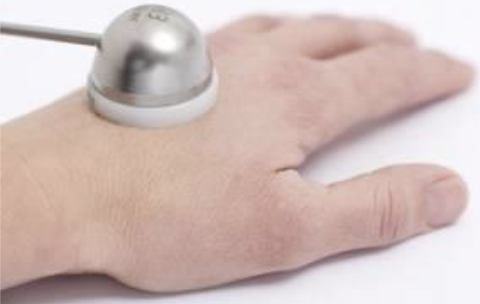
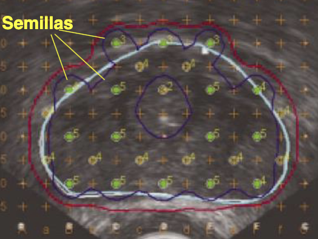
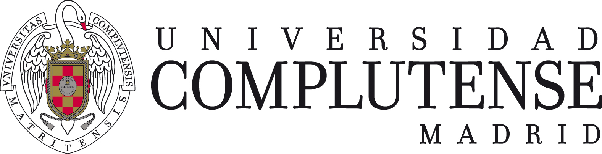

Braquiterapia
Fundamentos, fuentes, técnicas de implante, dosimetría
Definición y fundamentos
Braquiterapia
Irradiación de un paciente mediante fuentes de radiación encapsuladas, colocadas en el interior del paciente o en contacto directo con él.
Ventajas potenciales
- Como la radiación se emite desde el tumor hacia el exterior se evita el depósito de dosis en las regiones de acceso propio de la radioterapia externa.
- Mediante el diseño del implante y una elección adecuada de las fuentes (energía) se puede concentrar la dosis en el tumor y reducirla en el exterior.
Desventajas prácticas
- La planificación dosimétrica es más compleja que en la radioterapia externa y está condicionada por la realización del implante.
- En la mayoría de los casos implica la realización de un procedimiento quirúrgico.
- Utiliza fuentes radiactivas con sus consiguientes consideraciones de protección radiológica.
Clasificación por la tasa de dosis de la fuente1
- Alta tasa de dosis: > 12 Gy/h. El tiempo de permanencia de las fuentes en el paciente es del orden de unos pocos minutos.
- Baja tasa de dosis: 0.4 – 2 Gy/h. El tiempo de permanencia de la fuente es de varios días.
Clasificación por el número de aplicaciones
- Única
- Fraccionada
- Pulsada: varias aplicaciones muy cortas al día
- Permanente: las semillas se dejan en el interior del paciente. El tratamiento se debe a la activad integral de las fuentes.
Fuentes, aplicadores y equipos
Características de las fuentes
Tipo de emisión
- La mayoría de los isótopos utilizados son emisores de radiación γ y β en los que solo se utiliza la radiación γ; la radiación β es de muy baja energía y se elimina rodeando la fuente de una envoltura metálica que la absorbe completamente.
- Se emplean también algunos emisores β puros.
Energía de la fuentes
- La energía de la radiación emitida determina cómo disminuye la dosis al alejarnos de la fuente. Cuanto más alta sea, mayor será la dosis a distancias grandes.
- Para obtener distribuciones de dosis más homogéneas son preferibles los emisores de alta energía.
- Los emisores de baja energía administran menos dosis en los tejidos sanos que rodean al tumor pero para conseguir irradiar todo el volumen puede ser necesario utilizar varias fuentes.
Semiperiodo de desintegración
- Las fuentes de vida larga tienen la ventaja de que pueden reutilizarse muchas veces.
- Si se quiere dar altas tasas de dosis con fuentes que no sean muy grandes, es necesario usar isótopos de vida corta.
- Para implantes permanentes, es preferible usar isótopos con una vida media corta, para que depositen la mayor parte de la dosis en las primeras semanas o meses después de su colocación, y su radiactividad sea insignificante al cabo de un año.
Isótopos de uso más frecuente
Iridio-192
- Emisor β y γ; solo se usa la radiación γ.
- Semivida corta: 74.3 días.
- Energía promedio intermedia: 0.380 MeV.
- Muy utilizado tanto en alta tasa como en baja tasa de dosis.
- Metálico y muy maleable. Se puede emplear en forma de hilos metálicos, horquillas, semillas pequeñas unidas formando una cinta…
Yodo-125
- Emisor γ (captura electrónica).
- Semivida corta: 59.6 días.
- Energía promedio muy baja: 0.035 MeV (aunque la energía máxima alcanza 0.355 MeV).
- Utilizado para implantes permanentes, en forma de semillas.
Cobalto-60
- Emisor β y γ; solo se usa la radiación γ.
- Semivida larga: 5.26 años.
- Energía promedio alta (γ): 1.2 MeV.
Rutenio-106 y Estroncio-90
- Emisores β puros.
- Semivida larga: 1.04 años (Rutenio-106) y 28 años (Estroncio-90).
- Energía máxima de las partículas β: 3.4 MeV (Rutenio-106) y 2.27 MeV (Estroncio-90).
- Muy utilizados para tratar lesiones superficiales en los ojos: la dosis a una profundidad de 2 mm es solo el 20% de la dosis en superficie (Estroncio-90).
Fuentes de rayos X (fuentes artificiales electrónicas)
Aplicadores
- Dispositivos que permiten guiar la fuente y asegurar la estabilidad y reproducibilidad de su colocación
- En ocasiones deforman el tejido para mejorar la geometría de la irradiación.


En las aplicaciones intraluminales se aprovecha la luz de un vaso para introducir el catéter que guía las fuentes.
El catéter se conecta a una máquina que contiene las fuentes y las desplaza hasta las posiciones programadas según un tiempo planificado.
Equipos
Complejidad de la braquiterapia
Los tratamientos de braquiterapia siempre van asociados a procedimientos quirúrgicos de mayor o menor complejidad.
Desde el punto de vista de la gestión hospitalaria, una unidad de braquiterapia es mucho más compleja que una unidad de radioterapia externa.
Realización del implante
En el procedimiento quirúrgico se coloca el aplicador o directamente las fuentes en el caso de los implantes permanentes.
Equipos de carga remota o telecomandada
Los equipos de braquiterapia son contenedores portátiles de fuentes a los que se conectan los aplicadores implantados en el paciente. Se encargan de llevar las fuentes hasta las posiciones programadas y mantenerlas allí los tiempos planificados.
Ventajas de la carga telecomandada
- Elimina la exposición a la radiación del médico y del personal que participa en la colocación del aplicador.
- Elimina la exposición del personal que atiende al paciente durante el tratamiento.
- Permite que el paciente reciba visitas durante el tratamiento.
- Es imprescindible en los tratamientos con alta tasa de dosis.
- Con los equipos modernos permite una mayor precisión y control en la administración de la dosis.
Caracterización de fuentes de braquiterapia
La tasa de exposición a una distancia \(d\) de una fuente aislada en aire viene dada por la expresión:
\[ \frac{dX}{dt} = \frac{A \cdot \Gamma}{d^2} \]
Donde \(\Gamma\) es la constante de tasa de exposición, que depende solo del isótopo del que está compuesta la fuente.
Autoatenuación
Los efectos de atenuación de la radiación en la propia fuente son muy importantes.
- Atenuación por el material radiactivo.
- Atenuación por el material de encapsulamiento.
La dosis total depositada fuera de la fuente puede ser hasta un 30% inferior a la que habría si no existiera autoatenuación.
Actividad aparente
Actividad del isótopo que, en ausencia de autoatenuación, daría lugar a la misma dosis en el exterior de la fuente que la fuente completa con autoatenuación.
\(A_{ap} < A\)
La relación exacta entre \(A_{ap}\) y \(A\) depende del encapsulamiento y de la forma geométrica de la fuente.
\(\Gamma\) Restringida (\(\Gamma_\Delta\))
- Toma en cuenta únicamente la exposición debida a fotones emitidos (gamma, X, bremsstrahlung interno) con una energía superior a la energía mínima necesaria para que los fotones salgan de la fuente (considerando la autoatenuación de ésta).
Tasa de kerma en aire para una actividad aparente
\[ \frac{dK}{dt} (d) = \frac{A_{ap} \times \Gamma_{KRA}}{d^2} \] Donde \(\Gamma_{KRA}\) es la constante de tasa de kerma: \[ \Gamma_{KRA} = \frac{\Gamma_\Delta \cdot 0.876 \cdot 10^{-2} \, \text{Gy/R}}{ 3.7 \cdot 10^{10} \, \text{Bq/Ci}} \]
Tasa de Kerma de Referencia en Aire TKRA
Siguiendo el criterio general de sustituir la exposición por el kerma en la caracterización de la radiación, la ICRU recomendó caracterizar las fuentes radiactivas a partir de la Tasa de Kerma de Referencia en Aire (TKRA), definida como la tasa de kerma en aire a 1 m de la fuente, corregida por la atenuación y dispersión en el aire.
La distancia de 1 metro se considera lo suficientemente grande respecto al tamaño de las fuentes típicas de braquiterapia como para que se puedan considerar puntuales, de forma que se asume que a esa distancia:
- La distribución de dosis tiene simetría esférica y no hace falta considerar la orientación de la fuente.
- La variación de dosis con la distancia sigue con buena aproximación la ley de la inversa del cuadrado.
La definición del TKRA se especifica para una fuente concreta (o un conjunto de fuentes de la misma composición, forma y estructura) y tiene en cuenta explícitamente la autoatenuación de ésta.
- El TKRA se mide en Gy/s (o más típicamente en mGy/h).
- Para una fuente puntual, en aire: \[ \frac{dK}{dt} (d) = \frac{TKRA}{d^2} \]
Obligaciones legales relativas al TKRA
La ley obliga a comprobar el TKRA de las fuentes empleadas en implantes de braquiterapia
Medida del TKRA
La calibración de la cámara se realiza midiendo la respuesta (carga o corriente) para una fuente patrón, de TKRA conocido. La medida del \(TKRA\) de una fuente del mismo tipo que la fuente patrón será
\[ TKRA = TKRA_{\text{FP}}\cdot e^\frac{t_c-t_m}{\tau} \frac{I}{I_{\text{FP}}} \]
donde \(I\) e \(I_{\text{FP}}\) son las intensidades de corriente producidas por la fuente y la fuente patrón (FP), y \(TKRA_{\text{FP}}\) el valor certificado para el instante \(t_c\). \(t_m\) es el instante de medida y \(\tau\) la vida media del isótopo contenido en la fuente.
Cálculo de la dosis en braquiterapia
Formalismo de cálculo de la AAPM TG43
Para evitar inconsistencias e incertidumbres, el TG43 propone un formalismo que caracteriza a cada fuente de braquiterapia mediante varias funciones unidimensionales y bidimensionales:
- La dosis en un punto cercano a la fuente (simetría cilíndrica) con coordenadas polares \(r, \theta\) (independiente del angulo \(\phi\)) es:
\[ \dot{D}(r, \theta) = S_K \Lambda g(r) \frac{F(r, \theta) G(r, \theta)}{G(r_0, \theta_0)} \]
- \(S_K\) es la intensidad de kerma de la fuente (TKRA).
- \(\Lambda\) es la constante que pasa de kerma a dosis en agua.
- \(g(r)\) expresa la dependencia radial de la dosis debido a atenuación y dispersión en el agua.
- \(G(r, \theta)\) es la función que depende de la forma geométrica de la fuente.
- \(F(r, \theta)\) es la función de anisotropía.
Función de dependencia radial \(g(r)\)
\(g(r)\) describe la atenuación y la dispersión para el plano de bisección de la fuente, \(\theta = 90\)
Función de geometría de la fuente \(G(r, \theta)\)
\(G(r, \theta)\) define la intensidad de la fuente en ausencia de medio material con una distribución homogénea e infinita.
- Para una fuente puntual \(G(r, \theta) = \frac{1}{r^2}\).
- Para una fuente lineal de longitud \(L\), \[ G(r, \theta) = \begin{cases} \frac{\beta}{L r \sin \theta} & \text{si } \theta \neq 0 \\ \frac{1}{r^2 - \frac{L^2}{4}} & \text{si } \theta = 0 \end{cases} \]
\(\beta\) es el ángulo subtendido por la fuente desde el punto de cálculo.
Función de anisotropía \(F(r, \theta)\)
\(F(r, \theta)\) describe la anisotropía, introducida por la falta de simetría y por la autoatenuación, en función dal ángulo \(\theta\), \(F(r, 90) = 1\)
Caracterización de las fuentes
- Es el fabricante de la fuente el que proporciona los valores de las funciones \(g\), \(G\) y \(F\), normalmente como tablas de valores obtenidos a partir de medidas en laboratorios especializados o a partir de cálculos de Monte Carlo.
Orientación de las fuentes
La aplicación de la función \(F\) solo tiene sentido si se puede determinar con precisión la orientación de la fuente, lo que en la práctica puede resultar en general complicado.
\[ \dot{D}(r, \theta) = S_K \Lambda g(r) \frac{G(r, \theta_0)}{G(r_0, \theta_0)} g(r) \phi_{an}(r) \]
El cálculo de la dosis se aproxima por un modelo 1D (simetría esférica) mediante otra función de anisotropía. \(\phi_{an}\) que representa la dosis promedio a una distancia \(r\) en todas direcciones.
Planificación de tratamientos
Proceso de la braquiterapia
- Colocación de los aplicadores (vectores, catéteres, intracavitarios)
- Reconstrucción de los aplicadores mediante imágenes
- Contorneo de volúmenes y prescripción
- Optimización de la distribución de las fuentes para cumplir con la prescripción de dosis
- Cálculo de la dosis en el volumen de interés y en los órganos de riesgo
- Ajuste de la posición y tiempo de las fuentes para optimizar la distribución de la dosis
- Ejecución del tratamiento y seguimiento del paciente
Alcance del cálculo dosimétrico
- Braquiterapia de baja tasa: determinación del tiempo de permanencia de las fuentes en el paciente para alcanzar la dosis de prescripción.
- Braquiterapia de alta tasa: determinación de las posiciones y del tiempo de permanencia de las fuentes en cada punto para alcanzar la dosis de prescripción y la distribución de dosis optimizada.
- Implantes permanentes: proceso interactivo en el que el Radiofísico indica al Oncólogo de Radioterapia cuántas semillas y dónde se deben implantar. La planificación se va corrigiendo en tiempo real en función del desarrollo del implante en quirófano, que se realiza mediante control ecográfico.
Calidad dosimétrica
La colocación de los aplicadores condiciona la calidad dosimétrica del tratamiento.
- Por la propia física de la emisión de radiación desde las fuentes, la distribución de dosis no puede ser uniforme. La dosis crece rápidamente al acercarnos a la fuente.
- Cuando hay que cubrir un volumen superior al alcanzable mediante una única fuente, se combinan varias fuentes agrupadas en planos con distancias constantes entre las fuentes. En planos perpendiculares a las fuentes, estas se agrupan formando triángulos.
- El centro del triángulo, el punto en el que la dosis es menor en el espacio entre fuentes, se utiliza como lugar de prescripción de la dosis.

Reconstrucción espacial mediante imágenes 2D
Reconstrucción a partir de dos o más radiografías tomadas desde distintos ángulos

- Unos marcadores radiopacos, normalmente unas marcas de tamaño figjo sobre un arco que se coloca rodeando al paciente, permiten determinar la ampliación de las imágenes.
- Se asume que el paciente está en la misma posición en ambas proyecciones, hay una coordenada común determinada por el eje de giro
- Un usario identifica puntos comunes en ambas proyecciones, lo que permite realizar la reconstrucción
Reconstrucción espacial mediante imágemes 3D
Los aplicadores o las fuentes se contornean en los diferentes cortes tomográficos
Delimitación de volúmenes
- En este tipo de cálculos se requiere la información detallada de distribución de dosis en los órganos sanos (histogramas dosis-volumen).
- Es necesaria una reconstrucción tridimensional de la posición de las fuentes y de los órganos (TC, RM, Ultrasonidos).
Cáculo del implante completo
- Obtenidas las posiciones de las fuentes, se puede calcular la distribución de tasa de dosis sumando en cada punto la correspondiente a cada fuente, calculada según el formalismo TG43.
- Este cálculo no toma en cuenta la atenuación de una fuente por otra ni las heterogeneidades del tejido.
- Se pueden hacer cálculos más precisos usando el método de Monte Carlo pero no es lo habitual.
Distribución de dosis obtenida en un tratamiento de braquiterapia de cáncer de cervix
Histogramas dosis volumen
- La falta de uniformidad en los órganos blanco se refleja en las colas de los histogramas.
- Si la anatomía es favorable los órganos de riesgo reciben dosis menores de las asociadas a tratamientos mediante radioterapia externa.
Incertidumbres en braquiterapia
- La incertidumbre geométrica es mayor (\(\frac{dD}{dx}\) es muy grande).
- No se suelen hacer correcciones por heterogeneidad de los tejidos.
- No se toma en cuenta la atenuación de una fuente por otra.
- Es imposible tomar en cuenta el movimiento de los órganos.
- Se consideran aceptables incertidumbres del 10% en la dosis calculada.

Braquiterapia. Física de la radioterapia